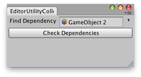

EditorUtility.CollectDependencies
public static Object[] CollectDependencies(Object[] roots);
Description 描述
Calculates and returns a list of all assets the assets listed in roots depend on.

Editor window that shows the next example.
using UnityEngine; using UnityEditor;
public class CollectDependenciesExample : EditorWindow { static GameObject obj = null;
[MenuItem("Example/Collect Dependencies")] static void Init() { // Get existing open window or if none, make a new one: CollectDependenciesExample window = (CollectDependenciesExample)EditorWindow.GetWindow(typeof(CollectDependenciesExample)); window.Show(); }
void OnGUI() { obj = EditorGUI.ObjectField(new Rect(3, 3, position.width - 6, 20), "Find Dependency", obj, typeof(GameObject)) as GameObject;
if (obj) { Object[] roots = new Object[] { obj };
if (GUI.Button(new Rect(3, 25, position.width - 6, 20), "Check Dependencies")) Selection.objects = EditorUtility.CollectDependencies(roots); } else EditorGUI.LabelField(new Rect(3, 25, position.width - 6, 20), "Missing:", "Select an object first"); }
void OnInspectorUpdate() { Repaint(); } }